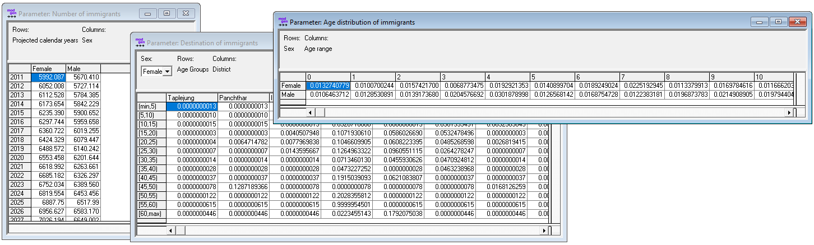

1.5. Script 5: Immigration¶
Immigration is modeled by total number by sex and year, age distribution by sex, and destination district by age and sex. Distributional pattern are assumed to be time-invariant, the total number is assumed to increase at a fixed rate.
1.5.1. File output¶
The code below generates 3 model parameters stored in a Modgen .dat file
- Number of immigrants by year and sex
- Age distribution of immigrants by sex
- Destination district of immigrants by age and sex

1.5.2. Code¶
####################################################################################################
#
# DYNAMIS-POP Parameter Generation File 5 - Immigration
# This file is generic and works for all country contexts.
# Input file: globals_for_analysis.RData (To generate such a file run the setup script)
# Last Update: Martin Spielauer 2018-05-12
#
####################################################################################################
####################################################################################################
# Clear work space, load required packages and the input object file
####################################################################################################
rm(list=ls())
library(haven)
library(dplyr)
library(data.table)
library(sp)
library(maptools)
library(survival)
library(fmsb)
library(eha)
load(file="globals_for_analysis.RData")
dat <- g_residents_dat
# Set Parameter Output File
parafile <- file(g_para_immigration, "w")
# Remove those in the country 12 months ago
n_abroad <- max(dat$M_DOB)
dat <- dat[dat$M_PDIST==n_abroad,]
# Add an integer variable for age a year ago
dat$m_ageago <- as.integer(dat$M_AGE-0.5)
dat[dat$m_ageago<0,] <- 0
####################################################################################################
# Create and append a dataset of all possible immigrations for each age
# This is to avoid empty cells in matrices
# The records have very low weights which do not affect overall immigration
####################################################################################################
umale <- unique(dat$M_MALE)
udist <- 0:(n_abroad-1)
uage <- 0:100
# Keep only what's needed
dat <- dat[,c("M_WEIGHT", "M_MALE", "M_DOR", "m_ageago" )]
allmigs <- expand.grid(M_MALE=umale, M_DOR=udist, m_ageago=uage)
allmigs$M_WEIGHT <- 0.0000001
dat <- rbind(dat, allmigs)
# Age groups 5 years ago, up to 60+
dat$m_agegr5 <- as.integer(dat$m_ageago/5) * 5
dat$m_agegr5[dat$m_agegr5>60] <- 60
####################################################################################################
# Calculate the parameter NumberImmigrants[SIM_YEAR_RANGE][SEX]
# Immigrants last year and a growth rate scenario with growth "yearlygrowth" to be specified here
####################################################################################################
yearlygrowth <- g_immigration_number_growth
# Create the parameter for total immigration past year
immigrants <- as.data.frame(xtabs(dat$M_WEIGHT ~ dat$M_MALE))
immigrants <- immigrants[order(immigrants$dat.M_MALE),]
####################################################################################################
# Write the parameter MigrationProbability[SEX][AGE5_PART][DISTRICT_NAT]
####################################################################################################
cat("parameters { \n //EN Number of immigrants\ndouble NumberImmigrants[SIM_YEAR_RANGE][SEX] = {\n", file=parafile)
for (pos in c(1:101))
{
cat(format(round(immigrants$Freq * yearlygrowth^pos,5),scientific=FALSE),"\n", file=parafile, sep=", ", append=TRUE)
}
cat("\n}; \n\n", file=parafile, append=TRUE)
####################################################################################################
# Calculate the parameter cumrate AgeImmigrants[SEX][AGE_RANGE]
####################################################################################################
immibyage <- as.data.frame(xtabs(dat$M_WEIGHT ~ dat$M_MALE + dat$m_ageago))
immibyage$groupsum <- ave(immibyage$Freq, immibyage$dat.M_MALE, FUN=sum)
immibyage$paravalue <- immibyage$Freq / immibyage$groupsum
immibyage <- immibyage[order(immibyage$dat.M_MALE, immibyage$dat.m_ageago),]
####################################################################################################
# Write the parameter AgeImmigrants[SEX][AGE_RANGE]
####################################################################################################
cat("\n\n//EN Age distribution of immigrants\ncumrate AgeImmigrants[SEX][AGE_RANGE] = {\n", file=parafile, append=TRUE)
cat(format(round(immibyage$paravalue,10),scientific=FALSE), file=parafile, sep=", ", append=TRUE)
cat("\n}; \n\n", file=parafile, append=TRUE)
####################################################################################################
# Calculate the parameter DestinationImmigrants[SEX][AGE5_PART][DISTRICT_NAT]
####################################################################################################
immidest <- as.data.frame(xtabs(dat$M_WEIGHT ~ dat$M_MALE + dat$m_agegr5 + dat$M_DOR))
immidest$groupsum <- ave(immidest$Freq, immidest$dat.M_MALE, immidest$dat.m_agegr5, FUN=sum)
immidest$paravalue <- immidest$Freq / immidest$groupsum
immidest <- immidest[order(immidest$dat.M_MALE, immidest$dat.m_agegr5, immidest$dat.M_DOR),]
####################################################################################################
# Write the parameter DestinationImmigrants[SEX][AGE5_PART][DISTRICT_NAT]
####################################################################################################
cat("\n\n//EN Destination of immigrants\ncumrate DestinationImmigrants[SEX][AGE5_PART][DISTRICT_NAT] = {\n", file=parafile, append=TRUE)
cat(format(round(immidest$paravalue,10),scientific=FALSE), file=parafile, sep=", ", append=TRUE)
cat("\n }; \n};\n", file=parafile, append=TRUE)
close(parafile)